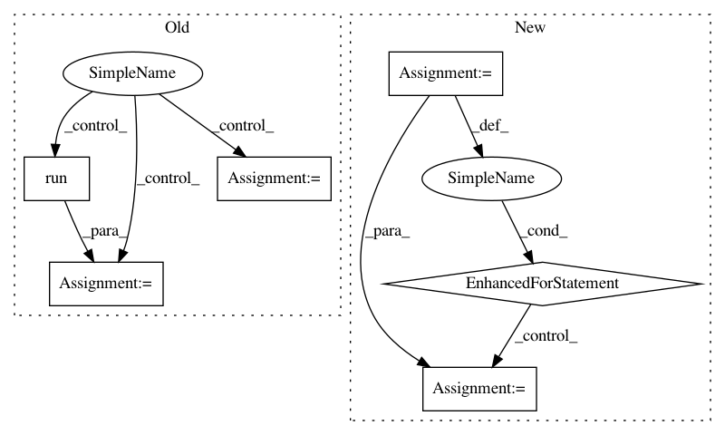

28f6dbec4bee2572fa7f94445d63cebb2de6dc9b,bin/tfr_hdf5.py,,read_tfr,#Any#Any#,93
Before Change
with tf.Session() as sess:
next_datum = sess.run(next_op)
while next_datum:
seq_1hot = next_datum["sequence"].reshape((-1,4))
targets1 = next_datum["targets"].reshape(target_len,-1)
seqs_1hot.append(seq_1hot)
targets.append(targets1)
try:
next_datum = sess.run(next_op)
except tf.errors.OutOfRangeError:
next_datum = False
seqs_1hot = np.array(seqs_1hot)
targets = np.array(targets)
After Change
targets = []
si = 0
for seq_1hot, targets1 in dataset:
// TEMP!
if si % 2 == 0:
seq_1hot = seq_1hot.numpy()[0].astype("uint8")
targets1 = targets1.numpy()[0].astype("float16")
seq_1hot = seq_1hot.reshape((-1,4))
targets1 = targets1.reshape((-1,num_targets))
seqs_1hot.append(seq_1hot)
targets.append(targets1)
si += 1
seqs_1hot = np.array(seqs_1hot, dtype="uint8")
targets = np.array(targets, dtype="float16")
return seqs_1hot, targets
In pattern: SUPERPATTERN
Frequency: 3
Non-data size: 6
Instances
Project Name: calico/basenji
Commit Name: 28f6dbec4bee2572fa7f94445d63cebb2de6dc9b
Time: 2019-09-27
Author: drk@calicolabs.com
File Name: bin/tfr_hdf5.py
Class Name:
Method Name: read_tfr
Project Name: HyperGAN/HyperGAN
Commit Name: cb29df4dea83d69ef9f5109398b23158a8c680dc
Time: 2018-09-25
Author: martyn@255bits.com
File Name: examples/next-frame.py
Class Name: VideoFrameSampler
Method Name: _sample
Project Name: flow-project/flow
Commit Name: b7efdc787a7b9cc78f47e16fbd91e36ab5d12225
Time: 2017-02-17
Author: cathywu@eecs.berkeley.edu
File Name: variance_reduction/baseline_comparison_prototype.py
Class Name:
Method Name: